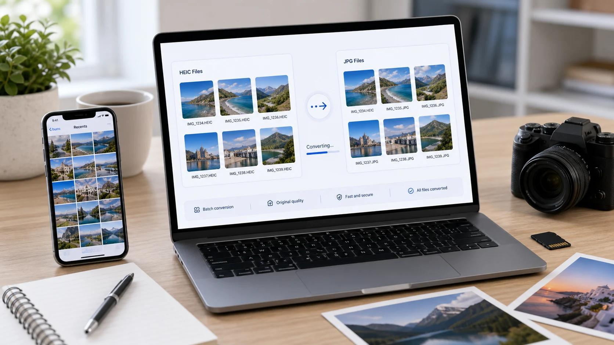

Have you ever transferred photos from your iPhone to a Windows computer, only to discover that some images will not open? Or tried uploading a picture to a website and received an error saying the file format is not supported?
You might assume the photograph is damaged, but the problem could be its file format.
Many iPhones save photographs in HEIC format. This format helps reduce storage space while maintaining good image quality. However, not every website, application, image editor, or older computer supports HEIC files.
This can become frustrating when you need to submit a photograph for an online application, attach an image to an email, upload product photos to an online store, or share pictures with someone using a different device.
Fortunately, you do not need to take the photograph again. In many situations, converting the HEIC image into JPG is enough to solve the compatibility problem.
In this guide, you will learn why iPhone photos use HEIC, why some devices cannot open them, how to convert HEIC to JPG, and how to avoid common image upload problems.
What Is HEIC and Why Does Your iPhone Use It?
HEIC stands for High Efficiency Image Container. It is an image container format commonly associated with Apple's use of the High Efficiency Image File Format (HEIF).
Apple introduced HEIF support with iOS 11. It uses modern image compression technology to store photographs efficiently while retaining visual quality.
In simple terms, HEIC helps your iPhone store photographs using less space than traditional JPEG files in many situations.
This is useful when you take hundreds or thousands of photographs and want to save storage space.
HEIC vs. JPG: What Is the Difference?
Both HEIC and JPG can store digital photographs, but they use different encoding methods and have different compatibility characteristics.
| Feature | HEIC / HEIF | JPG / JPEG |
|---|---|---|
| Full name | High Efficiency Image Container / Format | Joint Photographic Experts Group |
| Compression | Modern, efficient compression | Widely supported lossy compression |
| File size | Often smaller at comparable visual quality | Often larger at comparable visual quality |
| Compatibility | Depends on device, OS and software | Very widely supported |
| Common use | iPhone and Apple device photographs | Websites, email, applications, general sharing |
| Transparency | Depends on HEIF content and implementation | Not supported |
| Best use | Efficient photo storage | Broad compatibility and sharing |
Which format should you choose?
Choose HEIC when you want efficient photo storage and your devices and applications support it.
Choose JPG when you need a photograph that is more likely to work with websites, older software, online forms, and different operating systems.
JPG is not automatically better quality. The best format depends on what you want to do with the photograph.
Why Won't Your iPhone Photos Open on Windows?
One common problem occurs when someone transfers photographs from an iPhone to a Windows computer.
You open File Explorer, locate the photograph, and double-click it. Instead of displaying the image, Windows may show a message asking you to install an extension or stating that the file type cannot be viewed.
This happens because HEIC support depends on the software and codecs available on the computer.
Microsoft documents that Windows users may need the HEIF Image Extensions to open HEIF photographs. HEVC support is a separate issue relevant to certain videos and media workflows.
Common reasons Windows cannot open HEIC files
- Missing HEIF support: Your Windows installation may not have the necessary image extension installed.
- Older software: An older image viewer or editing application may not recognize HEIC files.
- Unsupported application: Some applications accept JPG and PNG but do not support HEIC uploads or editing.
- File transfer compatibility: A photograph transferred from an iPhone may retain its original HEIC format instead of being converted to JPG.
How to fix HEIC photos that won't open on Windows
You have two main options.
Option 1: Install HEIF support
If you regularly work with HEIC photographs, installing Microsoft's HEIF Image Extensions may allow compatible Windows applications to open them. Follow Microsoft's current instructions and check the requirements for your Windows version.
Option 2: Convert HEIC to JPG
If you only need to open, share, edit, or upload a particular photograph, converting it to JPG can be a simpler solution. JPG is supported by a much wider range of applications and devices.
You can use QuickToolsPK's HEIC to JPG Converter to convert an image directly in your browser.
Try the HEIC to JPG Converter
Convert iPhone photos directly in your browser.
Why Do Websites Reject iPhone HEIC Photos?
Another common situation occurs when you try to upload an iPhone photograph to a website.
You select the image, click upload, and receive an error such as:
- Unsupported image format.
- Invalid file type.
- Please upload a JPG or PNG image.
- This file format is not accepted.
- Unable to process the selected image.
The problem may not be the photograph itself. The website might simply not support HEIC.
1. Online application forms
Some online forms accept only specific image formats. For example, an application may request a JPG photograph under a particular file size. If your iPhone saves the original photograph as HEIC, the website may reject it.
Converting the image to JPG can help meet the format requirement, but you must still follow the application's dimensions, file size, and content rules.
2. Job application websites
Some recruitment websites allow applicants to upload profile photographs, resumes, or supporting images. If the upload system does not recognize HEIC, converting the photograph into JPG may solve the format issue.
3. Ecommerce websites
Online stores and marketplaces often specify image formats and dimensions for product listings. A seller using an iPhone to photograph products may need to convert HEIC images before uploading them to a platform that accepts only JPG or PNG.
4. Email attachments and file sharing
JPG photographs are generally easier to share with people using different devices and applications.
Although some sharing services automatically convert HEIC images, the behavior depends on the method and settings used. If you want a predictable format for an attachment, converting the photograph to JPG before sending it can help.
How to Convert HEIC to JPG Online for Free
If your photograph is in HEIC format and the receiving website requires JPG, you can convert it using an online image converter.
QuickToolsPK provides a dedicated HEIC to JPG tool that supports HEIC and HEIF files up to 20 MB. The conversion, preview, and download process takes place in your browser.
Step 1: Open the HEIC to JPG converter
Visit the QuickToolsPK HEIC to JPG Converter. You will find an upload area where you can select your HEIC or HEIF photograph.
Step 2: Select your iPhone photograph
Click the Select HEIC File option and choose the photograph you want to convert. You can also drag and drop a supported file into the upload area. The current tool supports HEIC and HEIF files up to 20 MB.
Step 3: Convert the photograph
After selecting your file, click Convert to JPG. The tool processes the image and creates a JPG version.
Step 4: Preview the converted image
Before downloading, compare the converted photograph with the original. Check the following:
- Does the image look correct?
- Are the colors and details preserved?
- Is the photograph displayed in the correct orientation?
- Is the converted image suitable for your intended use?
Step 5: Download your JPG image
Once you are satisfied with the preview, click Download JPG. Your converted image will be saved to your device.
Convert your iPhone photos now
Convert supported HEIC and HEIF photographs into JPG format without installing desktop software.
How to Change iPhone Camera Settings to Save Photos as JPG
If you frequently transfer photographs to Windows computers or upload them to websites that do not support HEIC, you may prefer to capture future photos in a more compatible format.
Apple provides a camera setting called Most Compatible on supported devices.
When selected, new photographs are saved in JPEG format instead of HEIF, and videos use H.264 instead of HEVC.
Follow these steps on your iPhone
- Open the Settings app on your iPhone.
- Scroll down and select Camera.
- Tap Formats.
- Choose Most Compatible.
Your iPhone will use JPEG for new photographs when this option is available.
Apple notes that the setting may vary depending on the device and software. It also explains that HEIF and HEVC media can be automatically converted to more compatible formats during certain sharing and transfer methods.
Should you switch from High Efficiency to Most Compatible?
It depends on how you use your photographs.
| Your situation | Suggested setting |
|---|---|
| You mainly use Apple devices | High Efficiency |
| You regularly share images with Windows users | Most Compatible |
| You upload photographs to websites that require JPG | Most Compatible |
| You want to save storage space | High Efficiency |
| You frequently edit photos in older software | Most Compatible may help |
You do not have to change the setting permanently. You can continue taking photographs in HEIC and convert only the images that need wider compatibility.
This approach lets you keep the storage benefits of HEIC while using JPG when necessary.
How to Convert HEIC Photos on Mac Without an Online Tool
If you use a Mac, you may not need an online converter for occasional HEIC conversions.
Apple's Photos and Preview applications support exporting compatible HEIF images into formats such as JPEG and PNG.
Convert HEIC to JPG using Preview
- Locate the HEIC photograph in Finder.
- Open the image in Preview.
- Select File from the menu.
- Choose Export.
- Select JPEG as the output format.
- Adjust the quality if the option is available.
- Choose a destination and save the image.
Your exported file will be a JPG image.
Convert HEIC to JPG using Photos
If your photograph is stored in the Photos app:
- Open Photos.
- Select the photograph.
- Choose File and then Export.
- Select Export Photo.
- Choose JPEG as the photo format.
- Select your export settings and save the file.
This is useful when you want to convert a few photographs without installing another application.
Why Is Your Converted JPG File Larger Than the Original HEIC?
You may notice that your converted JPG photograph takes up more storage space than the original HEIC file.
| File | Illustrative size |
|---|---|
| Original HEIC | 1.4 MB |
| Converted JPG | 2.1 MB |
Illustrative example only. Actual file sizes depend on the photograph, dimensions, and export settings.
This does not necessarily mean that something went wrong.
HEIC often achieves smaller file sizes than JPEG at comparable visual quality because of its more efficient compression technology.
When you convert a HEIC image into JPG, the new file may become larger.
How to reduce the size of a converted JPG
If the converted photograph is too large for a website or email attachment, you can compress it.
- Convert your HEIC image into JPG.
- Open the QuickToolsPK JPG Compressor.
- Upload the converted JPG photograph.
- Adjust the quality slider.
- Preview the compressed image.
- Compare its size and appearance.
- Download the compressed version.
The QuickToolsPK JPG Compressor offers a quality control between 40% and 100%, along with a side-by-side preview of the original and compressed versions.
How much should you compress a JPG?
There is no universal quality setting that works for every image.
A photograph with detailed textures may need a higher quality setting, while a simple image may tolerate more compression.
A useful approach is to start with a moderate setting, preview the result, and adjust it until the file meets the upload limit without looking noticeably degraded.
Avoid repeatedly compressing the same image. Whenever possible, work from the original or highest-quality version.
Compress a JPG Image Online
Reduce file size while maintaining visual quality.
What If Your Converted Image Still Cannot Be Uploaded?
Converting HEIC to JPG solves the file format problem, but it does not guarantee that every website will accept the image.
If your JPG still fails to upload, check these additional properties.
1. Check the image dimensions
Some websites require minimum or exact image dimensions. For example, a form may require an image of at least 600 × 600 pixels.
You can inspect the dimensions using an image information tool or resize the image if necessary.
Use the QuickToolsPK Image Resizer.
2. Check the maximum file size
A website may reject a JPG that exceeds its upload limit. For example, a form might accept files up to 2 MB.
Use an image compressor to reduce the file size while preserving sufficient visual quality.
3. Check the required image format
Some platforms accept JPG and PNG but do not accept WEBP. Others may support additional formats.
Read the upload instructions before converting the image. Do not assume JPG is accepted everywhere.
4. Check the aspect ratio
A photograph may have enough pixels but the wrong shape. A square profile image, portrait photograph, and landscape banner all use different proportions.
If the website requires a particular aspect ratio, you may need to crop the photograph before uploading.
5. Check the photograph itself
Some applications require specific photo backgrounds, framing, lighting, or content. Changing the file format will not correct those issues.
For official documents, follow the receiving authority's instructions rather than relying only on a format converter.
HEIC to JPG vs. HEIC to PNG: Which Should You Choose?
JPG and PNG are both widely used image formats, but they serve different purposes.
| Feature | JPG | PNG |
|---|---|---|
| Best for | Photographs | Graphics and images needing transparency |
| File size | Often smaller for photos | Often larger for photos |
| Transparency | No | Yes |
| Compression | Lossy | Lossless compression |
| Website compatibility | Very broad | Very broad |
| Typical use | Photo uploads and sharing | Logos, icons, screenshots and graphics |
For ordinary iPhone photographs, JPG is usually the practical choice when compatibility is the priority.
PNG is more suitable when you need transparency or are working with graphics where preserving sharp edges is important.
Keep in mind that converting a photograph to PNG does not automatically improve its original quality.
Is It Safe to Convert iPhone Photos Online?
Before using an online image converter, consider how it handles your files.
This is especially important if your photographs contain personal information, private family moments, business documents, or other sensitive content.
QuickToolsPK states that its HEIC to JPG converter processes files locally in your browser and does not upload them to a server.
That means the conversion is designed to happen on your device rather than through a remote upload workflow.
For sensitive images, it is still sensible to:
- Use the official website address.
- Avoid uploading files to unfamiliar websites.
- Read the site's privacy policy.
- Keep private images on trusted devices.
- Check the downloaded file before sharing it.
Also remember that browser-based processing uses your device's available memory and processing power. Very large images may take longer or fail on devices with limited resources.
Frequently Asked Questions
1. Why are my iPhone photos in HEIC format?
2. How do I open HEIC files on Windows?
3. How can I convert HEIC to JPG for free?
4. Does converting HEIC to JPG reduce image quality?
5. Why is my JPG larger than my original HEIC file?
6. Can I convert multiple HEIC photos at once?
7. Can I convert HEIC to JPG on an iPhone?
8. Can I convert HEIC to JPG without losing the original file?
9. Is HEIC better than JPG?
10. Does renaming a HEIC file to JPG convert it?
11. Can I upload HEIC photos to websites?
12. Can converting HEIC to JPG fix every upload error?
Final Thoughts: Make Your iPhone Photos Easier to Share
HEIC is a useful format for saving iPhone photographs efficiently, but compatibility can become a problem when sharing images with Windows users, uploading files to websites, or working with older applications.
The solution is not necessarily to stop using HEIC.
Instead, use the format that suits the situation. Keep HEIC for efficient storage, and convert photographs to JPG when a website, application, or recipient requires broader compatibility.
If you have an iPhone photo that will not open or upload, start by checking its format. If it is HEIC, convert it to JPG, review the result, and check the destination's file size and dimension requirements.